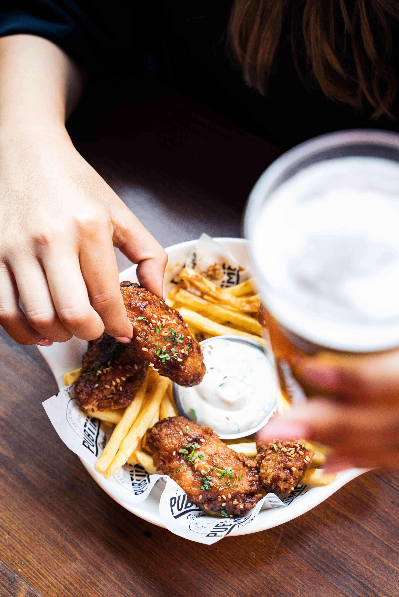
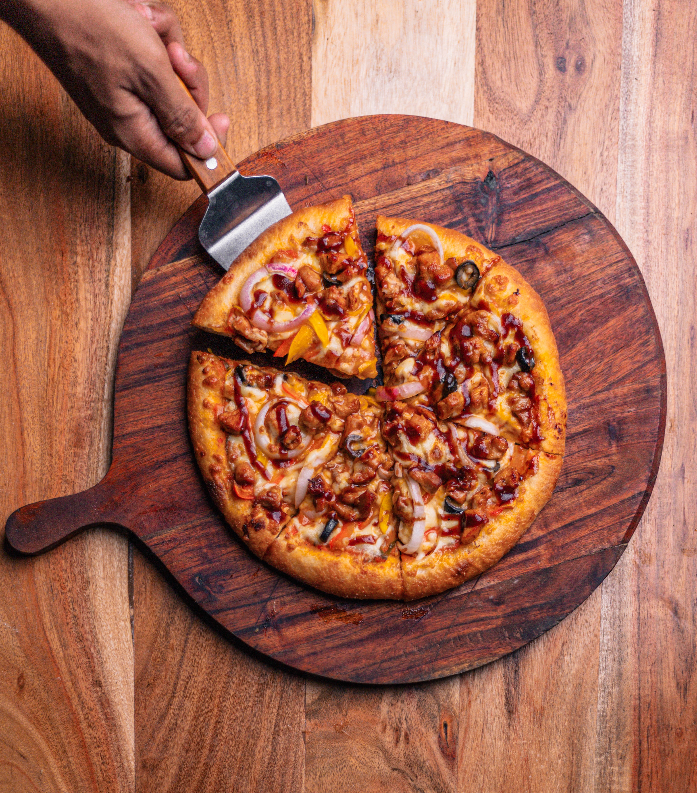

Isla Vista
Isla Vista is located south of Goleta and right next to the University of California, Santa Barbara (UCSB). It is home to many colleges students and locals; there are plenty of restaurants that are popular to the residents who live there. The beach is only a couple blocks from where the main restaurant area is, and is home to some of the best food after a long night out! It definitely is worth the visit to taste some of the best food.

Vons Chicken
Vons Chicken is known for their delicious Korean fried chicken. There are plenty of different flavors for those who love spice or not! Their most famous Crispy Fried Chicken is to die for.

Freebirds
Freebirds offer their customers customizable tacos and burritos! What differentiates Freebirds from other Mexican cuisines are their delicious tacos. You can add any choice of toppings such as steak or just veggies. This restaurant is a must try for visiting Isla Vista.

Woodstock's Pizza
Want to just get away and grab a bite of some great pizza? Woodstock's Pizza offers their customers the most delicious barbecue chicken pizzas and provides great drinks! Their are plenty of other options for their pizza and they make the best wings in Isla Vista. Come stop by to watch a game or just hang out with friends!